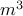

Sensor Selection via Convex OptimizationS. Joshi and S. Boyd
IEEE Transactions on Signal Processing, 57(2):451-462, February 2009.
We consider the problem of choosing a set of sensor measurements, from a set of possible or potential sensor measurements, that minimizes the error in estimating some parameters. Solving this problem by evaluating the performance for each of the choose possible choices of sensor measurements is not practical unless and are small. In this paper we describe a heuristic, based on convex optimization, for approximately solving this problem. Our heuristic gives a subset selection as well as a bound on the best performance that can be achieved by any selection of sensor measurements. There is no guarantee that the gap between the performance of the chosen subset and the performance bound is always small; but numerical experiments suggest that the gap is small in many cases. Our heuristic method requires on the order of  operations; for possible sensors, we can carry out sensor selection in a few seconds on a 2 GHz personal computer. |